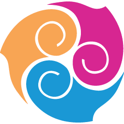

Experience
details.
PT Anantarupa Yaesa Suptesu Jagarti
Freelance Social Media Specialist
JAN 2024 — PRESENT
Key responsibilities
- Led daily content strategy across three digital brands.
- Produced gameplay videos and edited voice-overs.
- Hosted and managed TikTok and YouTube livestreams.
- Prepared daily, weekly, and monthly performance reports.
Selected achievements
- Increased community interaction by 40% within three months through engagement and live interaction.
Clients & projects
Lokapala